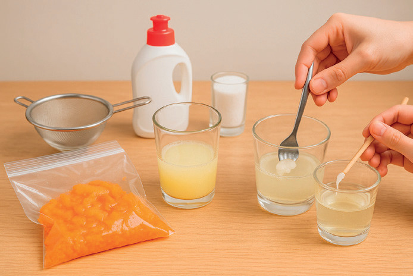
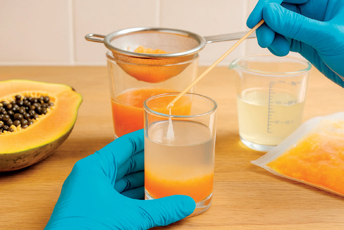

Salud
y bienestar
Observar el ADN a simple vista y comprender, a través de la experimentación, cómo algunas de sus
propiedades como la solubilidad permiten separarlo de otras biomoléculas presentes en las células de la
papaya, fortaleciendo así la competencia científico-técnica.
Una práctica de laboratorio demostrativa es un experimento realizado por el
instructor o por un grupo reducido de estudiantes, mientras el resto del grupo observa y aprende. Se utiliza
comúnmente en aulas o anfiteatros para ilustrar conceptos complejos, procedimientos potencialmente
peligrosos o el uso de equipos costosos. Su principal objetivo es permitir la observación directa de
fenómenos científicos y facilitar la comprensión de principios teóricos, fomentando el interés y la discusión
sin requerir que cada estudiante replique la actividad.
- 1 trozo de papaya madura (sin cáscara ni semillas)
- ½ taza de agua potable
- 1 cucharada de detergente líquido para platos
- ½ cucharadita de sal de mesa
- Vaso o frasco transparente
- Vaso limpio
- Cuchara
- Colador o filtro de café
- Alcohol (etanol o isopropílico al 90 % o más) bien frío
- Palillo o varilla de madera
- Bolsa plástica con cierre o mortero
- Embudo (opcional)


- Formen equipos de trabajo y reúnan los materiales necesarios.
- Ingresen al siguiente enlace https://cal.lat/p/A9I1GL o escaneen el
código QR. Observen el video sobre la extracción de ADN de la papaya.
- Coloquen el trozo de papaya en una bolsa con cierre o en un mortero. Trituren hasta
obtener una mezcla lo más homogénea posible (papilla).
- Preparen la solución de extracción. Mezclen en un vaso:
- ½ taza de agua
- 1 cucharada de detergente
- ½ cucharadita de sal
- Revuelvan suavemente hasta que se disuelva la sal (eviten hacer espuma).
- Viertan la papilla de papaya en la solución de extracción.
- Mezclen suavemente durante 2 a 3 minutos. El detergente rompe las membranas celulares y
nucleares; la sal ayuda a liberar y estabilizar el ADN.
- Usen un colador fino o un filtro de café sobre otro vaso limpio.
- Viertan la mezcla lentamente para obtener el líquido filtrado sin sólidos. Este filtrado
contiene el ADN disuelto.
- Inclinen ligeramente el vaso con el filtrado.
- Viertan lentamente el alcohol frío por el borde, formando una capa sobre el líquido (usa igual
volumen de alcohol que del filtrado). El alcohol debe estar muy frío para que el ADN precipite.
- Esperen unos segundos. Verán aparecer una sustancia blanquecina y fibrosa en la interfaz entre
el alcohol y el filtrado: ¡ese es el ADN de la papaya!
- Usen una varilla o palillo para enrollar el ADN con cuidado y examinarlo.
Evalúa tu trabajo según los criterios y completa la tabla.